重建真实品牌动画，
再让声音驱动画面。
10秒完整BUCK × Adobe参考 · 真实独立人像抠像 · 阶段二才释放候选B音轨
评分已按用户要求更新：视觉沿用v2保真尺度，音画同时检查真实完成动作与可感知响应。Sol为既有答卷复评，Astra在新规则冻结后重新作答。规则不保证某模型必须低于某个分数。
| 模型 | 视觉 | 音画 | 工程 | 总分 | 实验性质 |
|---|---|---|---|---|---|
| GPT‑6.1‑sol / xhigh | 39.5/70 | 15.25/25 | 5/5 | 59.75/100 | 事后复评 |
| GPT‑6‑astra / xhigh | 43.5/70 | 17.25/25 | 5/5 | 65.75/100 | 冻结后新运行 |
GPT‑6.1‑sol / xhigh · 事后复评
GPT‑6.1‑sol / xhigh
52.3分钟 · 76次完成请求 · 不限任务总时长
59.75/100 · 未通过 · 通过线85
可编辑工程、真实人物抠像及程序控制成立；视觉表现按v2尺度仅约六成。音频计算正确，但A/B实际完成动作不等于映射锚点，强低频峰时管体不可见，正常画面中的脉冲难辨。新量表分别扣除视觉保真与音画呈现质量，不添加总分系数。
先看：加入音轨到底改了什么
下方使用同一条B音轨、同一输出时钟。左：原R直接配B，保留原动画时序；右：模型E，按声音重定时并执行指定返修。对照视频由评测侧制作，不替代封存答卷。
同音轨并排 · 左R+B / 右E
建议先正常速度播放；三个声音峰为0.90、2.61、4.30秒。正常画面看不清的同步不会仅凭信号表拿满分。
真实参考 · 完整10秒
239源帧全部保留，末帧重复一次，无音频。
封存R · 第一阶段
本阶段未提供任何音轨。
封存E · 第二阶段
候选B驱动画面并执行局部返修。
音画同步的实际证据
声音分析正确、画面峰时存在、画面动作在峰时完成，是三件不同的事。评分将它们分别检查。
关闭脉冲与实际脉冲的对照
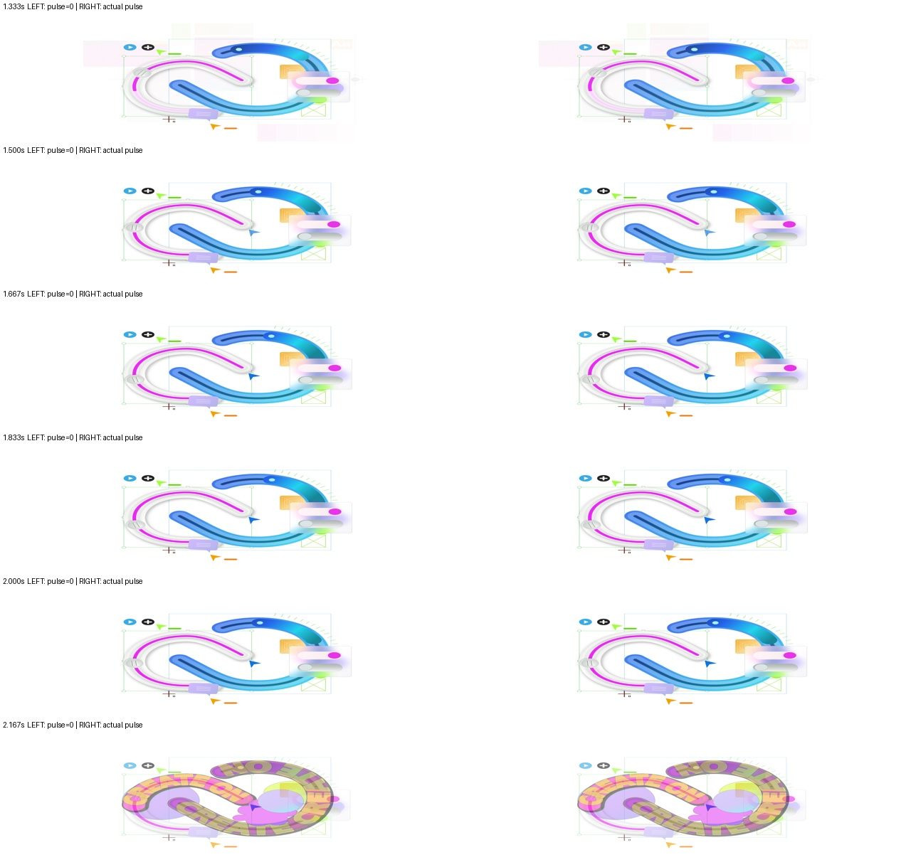
同一姿态下比较真正的管体厚度变化；只在差分或辅助并排中可辨的响应不会视为正常尺度清晰可见。
强低频峰与管体可见时段错开
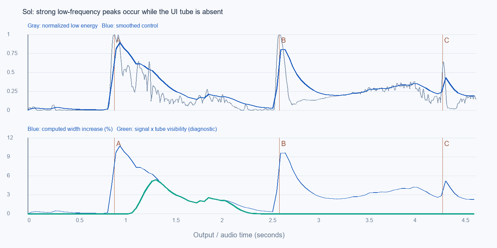
蓝线为计算出的厚度增量；绿线乘以管体可见度，仅作诊断，不是感知强度指标。A/B两个强峰时管体不可见；正常画面里主要看到回落尾段。
A：拼装提前完成
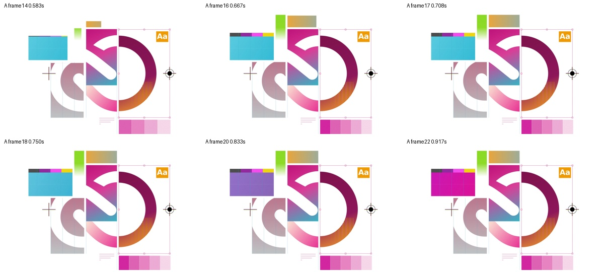
A低频峰0.90秒；最后卡片显露约0.702秒结束。峰时画面仍在，并不等于拼装在此刻完成。
B：装饰仍在继续长大
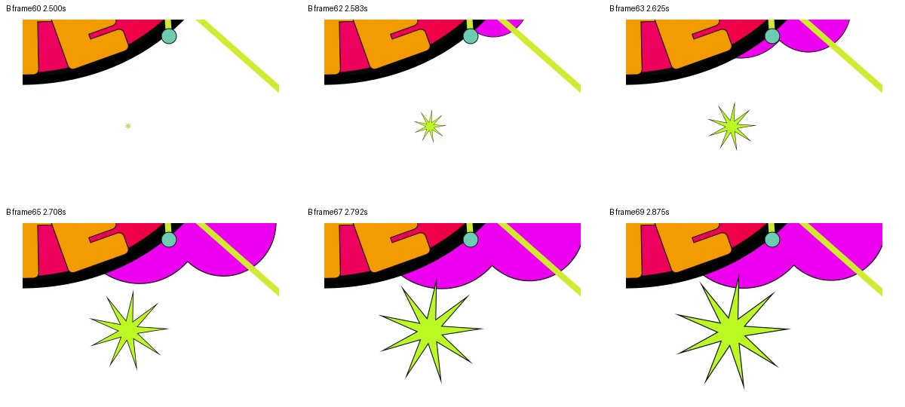
B低频峰2.61秒；右下装饰的缩放一直继续到约2.877秒。
C附近的实际画面
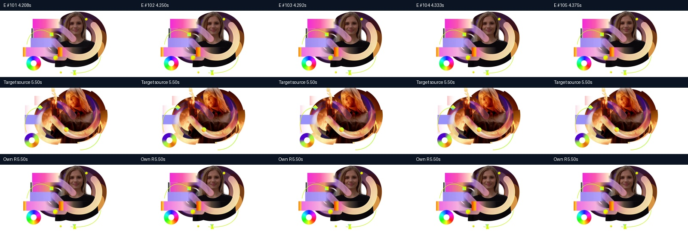
上排：E实际帧；中排：参考目标；下排：自身R目标。不能用R/E共同错误证明原片还原正确。
头部越界及前景遮挡
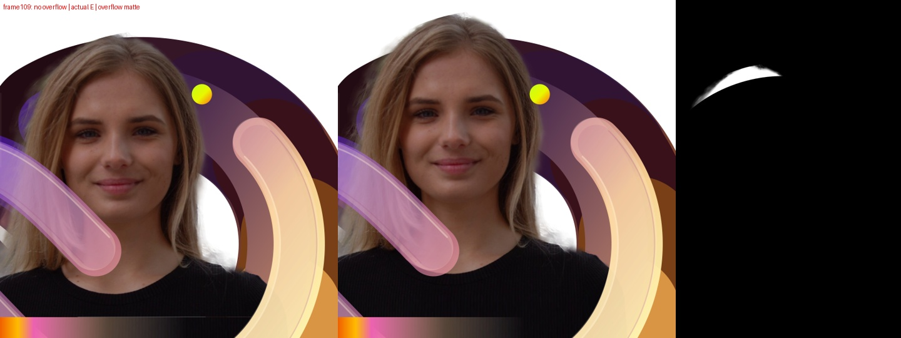
如有该诊断：关闭越界、实际E和新增蒙版对照。
视觉差距
局部转场与重影
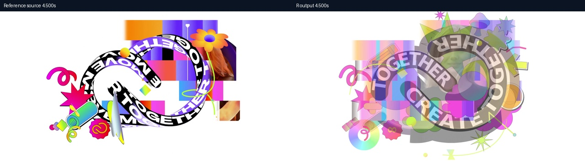
左参考、右R；逐项检查真实运动机制。
手与建筑的形体材质
二维或三维工具不加减分，仅看最终质量。
返修曲线文字
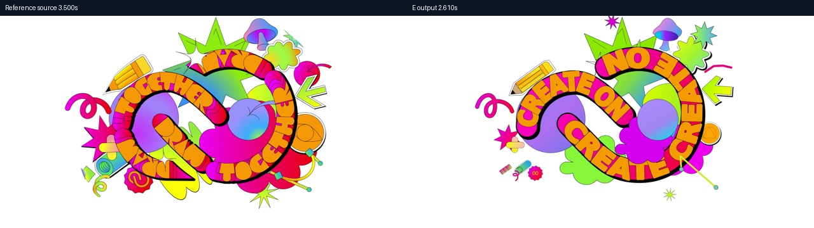
检查内容、阅读方向、曲线形变、字距与遮挡。
真实人像与切片融合
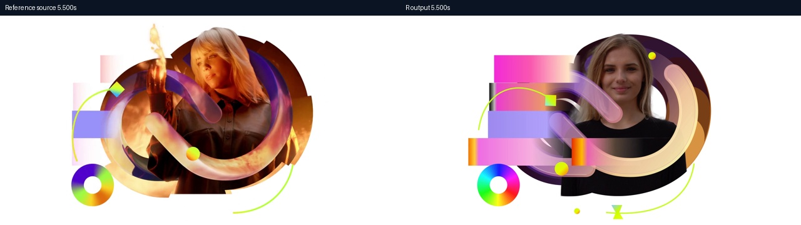
替换人物身份、动作、服饰、原片火焰属于题面豁免；仍检查边缘、融合和周围图形。
每一分怎么计算
Σ（子项权重×达成档位），无总分降分系数。视觉70、音画25、工程5；档位0 / 0.25 / 0.5 / 0.75 / 1。
构图、标志结构与曲率 4 / 6
网格色卡与印刷拼装 3 / 5
立体UI、玻璃与光学结构 3 / 7
插画细节、字形与非刚性展开 3 / 8
切片、手与建筑、花草骑行 4 / 8
源片时序、转换机制与遮挡 3.75 / 8
返修文字内容、方向及曲线形变 3.25 / 8
返修材质与局部范围 2.75 / 5
真实人像、边缘、融合与层次 7.75 / 10
光标局部延迟与未改内容保持 5 / 5
音频事件与包络计算 2 / 2
音轨内容、增益与时基 2 / 2
声音事件对应的实际视觉完成 3.75 / 9
| 子项 | 权重×档位 | 得分 | 错误原因与证据 |
|---|---|---|---|
| A · 实际完成时刻 | 1 × 0.25 | 0.25 | 最后网格卡片显露在0.702秒结束，峰0.90秒，早约4.75帧；后续色彩漂移不是拼装完成。 证据1 ↗ · 证据2 ↗ · 证据3 ↗ · 证据4 ↗ · 证据5 ↗ |
| A · 目标状态完整性 | 1 × 0.5 | 0.5 | 网格目标结构可辨，但缺少移动端帽、部分定位标记及细部。 证据1 ↗ · 证据2 ↗ · 证据3 ↗ · 证据4 ↗ · 证据5 ↗ |
| A · 连续局部动作 | 1 × 0.5 | 0.5 | 有独立卡片运动，但显露机制和参考局部动作明显近似。 证据1 ↗ · 证据2 ↗ · 证据3 ↗ · 证据4 ↗ · 证据5 ↗ |
| B · 实际完成时刻 | 1 × 0 | 0 | 12个装饰中最后一个缩放端点在约2.877秒，晚于2.61秒约6.41帧；在峰时设置source_time=3.5并不代表完整插画已展开。 证据1 ↗ · 证据2 ↗ · 证据3 ↗ · 证据4 ↗ · 证据5 ↗ |
| B · 目标状态完整性 | 1 × 0.5 | 0.5 | 主要插画和文字存在，目标细节与形体明显简化。 证据1 ↗ · 证据2 ↗ · 证据3 ↗ · 证据4 ↗ · 证据5 ↗ |
| B · 连续局部动作 | 1 × 0.25 | 0.25 | 主要靠整体缩放弹出，未复现局部非刚性展开。 证据1 ↗ · 证据2 ↗ · 证据3 ↗ · 证据4 ↗ · 证据5 ↗ |
| C · 实际完成时刻 | 1 × 1 | 1 | 实际人物alpha在4.30秒完成，与C一致。 证据1 ↗ · 证据2 ↗ · 证据3 ↗ · 证据4 ↗ |
| C · 目标状态完整性 | 1 × 0.5 | 0.5 | 替换人物正确，环边/切片周围状态明显简化；身份火焰豁免有效。 证据1 ↗ · 证据2 ↗ · 证据3 ↗ · 证据4 ↗ |
| C · 连续局部动作 | 1 × 0.25 | 0.25 | 人物渐显达到终点，但原片局部切片揭示被大面积叠化近似。 证据1 ↗ · 证据2 ↗ · 证据3 ↗ · 证据4 ↗ |
低频管体响应的正确性与可感知性 4.25 / 8
| 子项 | 权重×档位 | 得分 | 错误原因与证据 |
|---|---|---|---|
| 实际厚度及包络正确 | 2 × 1 | 2 | 实际像素有厚度变化，0–12%控制与包络算法正确。 证据1 ↗ · 证据2 ↗ · 证据3 ↗ |
| 正常尺度可见响应 | 3 × 0.25 | 0.75 | 正常完整画面几乎看不出收放；开关脉冲并排图和差分才能明确辨识，不能用差分可见冒充正常观感。 证据1 ↗ · 证据2 ↗ · 证据3 ↗ |
| 声音与局部运动节奏对应 | 2 × 0.25 | 0.5 | UI清楚可见仅1.333–2.042秒，厚度主要从+5.65%回落到+1.72%；两个主要低频峰时UI可见度均为0，缺少清楚收放峰谷。 证据1 ↗ · 证据2 ↗ · 证据3 ↗ |
| 中心线及非目标保持 | 1 × 1 | 1 | 路径固定，非目标保持；玻璃只折射其下方管体变化。 证据1 ↗ · 证据2 ↗ · 证据3 ↗ |
改音轨后的实际画面因果与不变性 3.25 / 4
工程与有效参数变体 5 / 5
工程、验证与交付
Python/Cairo绘制 + RVM/ONNX抠像 + NumPy/SciPy/OpenCV分析合成 + FFmpeg编码；本次未使用Blender。
完整评分报告 ↗ · 评分JSON ↗ · 独立验证 ↗ · 可编辑工程ZIP ↗
- 用户要求后的事后复评；新评分不是Sol首次作答前预注册规则。原题、素材、成片和工程未修改。
- A/B完成时间来自独立代码端点审计与实际图像窗口；端点小数为数学计算，不代表人眼测量精度。
- 可感知性是助手对正常尺度画面与对照证据的评档，没有独立人耳/人眼盲测。
- 仅工具辅助声音分析，没有原生听音；无人物alpha真值。
- 独立验证覆盖范围与原reports/verification.json一致；不把抽样当成所有帧。
- 固定UI窗口、规定包络及12%上限与B主低频峰错开，是题目设计的可感知性限制。该部分反映输出观感，不可全部归因于模型音频能力；不能为获得该分违反题面时序或包络。
GPT‑6‑astra / xhigh · 冻结后新运行
GPT‑6‑astra / xhigh
105.6分钟 · 150次完成请求 · 不限任务总时长
65.75/100 · 未通过 · 通过线85
共享可编辑工程、真实人物抠像和声音驱动链路成立，曲线字形及局部展开较完整。视觉仍受平面翻卷近似、光学材质、后半段形体与进程偏差限制；A提前、B稍晚，正常完整画面的管体脉冲仍不清楚，音频不能因计算正确而满分。
先看：加入音轨到底改了什么
下方使用同一条B音轨、同一输出时钟。左：原R直接配B，保留原动画时序；右：模型E，按声音重定时并执行指定返修。对照视频由评测侧制作，不替代封存答卷。
同音轨并排 · 左R+B / 右E
建议先正常速度播放；三个声音峰为0.90、2.61、4.30秒。正常画面看不清的同步不会仅凭信号表拿满分。
真实参考 · 完整10秒
239源帧全部保留，末帧重复一次，无音频。
封存R · 第一阶段
本阶段未提供任何音轨。
封存E · 第二阶段
候选B驱动画面并执行局部返修。
音画同步的实际证据
声音分析正确、画面峰时存在、画面动作在峰时完成，是三件不同的事。评分将它们分别检查。
关闭脉冲与实际脉冲的对照
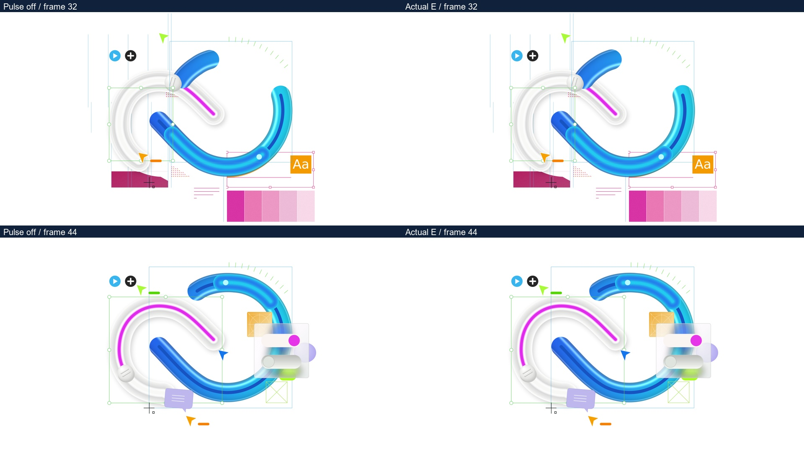
同一姿态下比较真正的管体厚度变化；只在差分或辅助并排中可辨的响应不会视为正常尺度清晰可见。
Astra：信号与管体出现时段
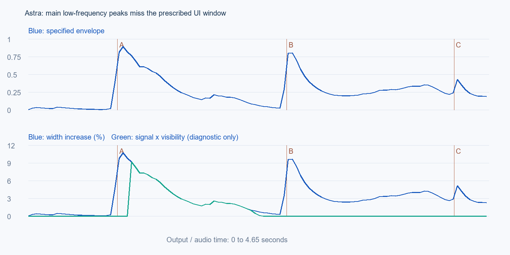
绿线为信号乘UI组可见度，仅作诊断。早期UI仍在拼装，不能把组已出现等同于完整管体已到位；A/B两个强峰时管体均不在场。
A：拼装已经提前结束
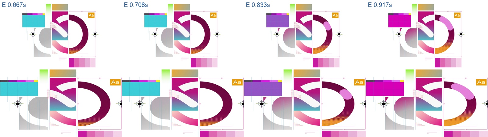
最后套准中心在源第23帧出现，输出约0.690秒完成；峰为0.90秒。后续墨色和端帽移动另行观察。
B：纸片还在恢复展开
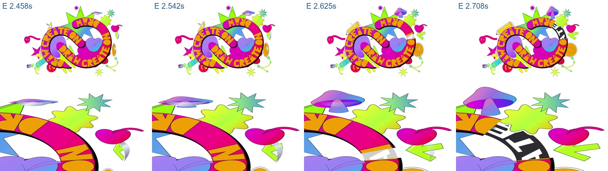
局部折叠约在源第87帧恢复，输出2.716秒；B为2.61秒。放大图仅帮助定位动作，不代替正常尺度观感。
C附近的实际画面
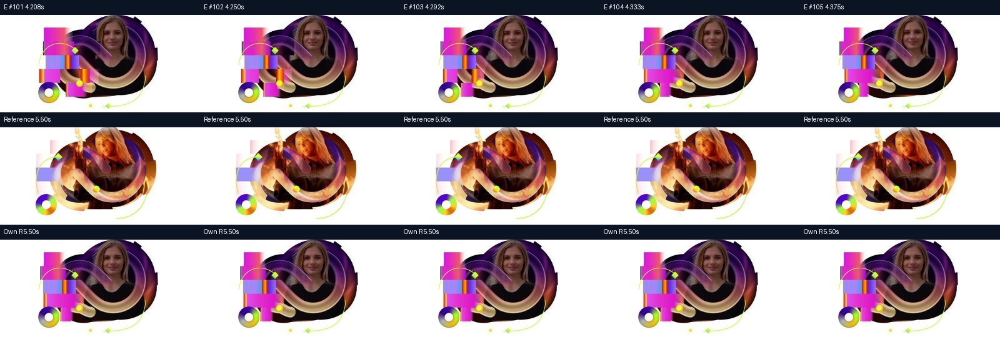
上排：E实际帧；中排：参考目标；下排：自身R目标。不能用R/E共同错误证明原片还原正确。
头部越界及前景遮挡
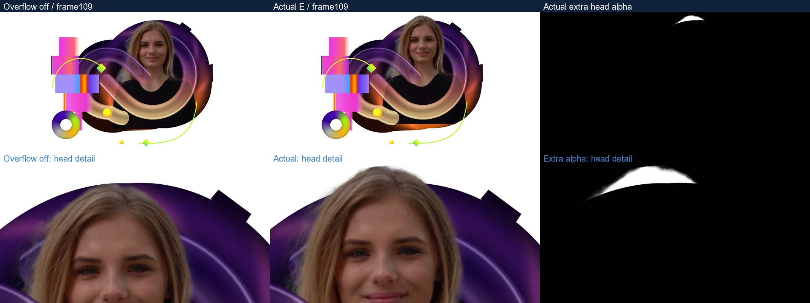
如有该诊断：关闭越界、实际E和新增蒙版对照。
视觉差距
局部转场与重影
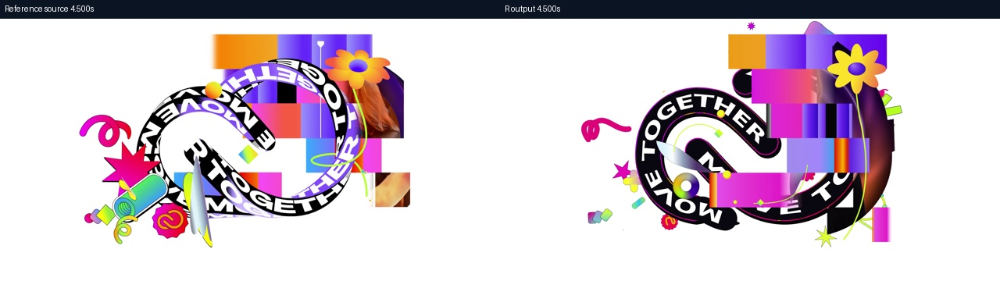
左参考、右R；逐项检查真实运动机制。
手与建筑的形体材质
二维或三维工具不加减分，仅看最终质量。
返修曲线文字
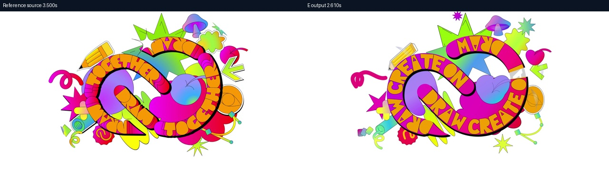
检查内容、阅读方向、曲线形变、字距与遮挡。
真实人像与切片融合
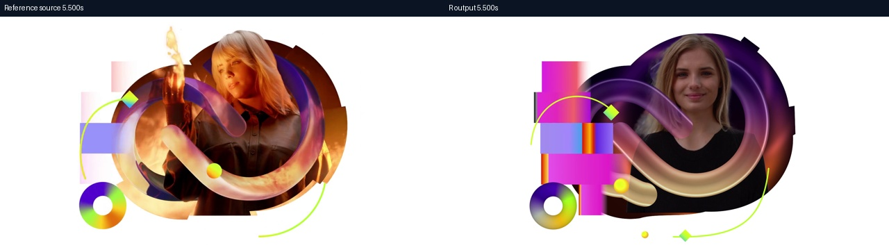
替换人物身份、动作、服饰、原片火焰属于题面豁免；仍检查边缘、融合和周围图形。
每一分怎么计算
Σ（子项权重×达成档位），无总分降分系数。视觉70、音画25、工程5；档位0 / 0.25 / 0.5 / 0.75 / 1。
构图、标志结构与曲率 4 / 6
网格色卡与印刷拼装 3 / 5
立体UI、玻璃与光学结构 3 / 7
插画细节、字形与非刚性展开 4.25 / 8
切片、手与建筑、花草骑行 4 / 8
源片时序、转换机制与遮挡 4 / 8
返修文字内容、方向及曲线形变 5 / 8
| 子项 | 权重×档位 | 得分 | 错误原因与证据 |
|---|---|---|---|
| 全部目标文字覆盖 | 1 × 1 | 1 | 彩色字与后续黑白环均实际替换TOGETHER为CREATE ON。 证据1 ↗ · 证据2 ↗ · 证据3 ↗ |
| 阅读方向可读性 | 2 × 0.75 | 1.5 | CREATE ON可沿曲线辨读，保留阅读方向；上方短弧和折叠切口附近仍有局部拥挤、截字。 证据1 ↗ · 证据2 ↗ · 证据3 ↗ |
| 曲线字形手绘变形 | 3 × 0.5 | 1.5 | 自定义字形沿曲线扭曲，但未达到参考的粗厚手绘挤压与空间翻卷。 证据1 ↗ · 证据2 ↗ · 证据3 ↗ |
| 填色描边间距遮挡 | 2 × 0.5 | 1 | 暖色、描边及原有遮挡保留，笔画粗细、字距及切口配合仍明显近似。 证据1 ↗ · 证据2 ↗ · 证据3 ↗ |
返修材质与局部范围 3.5 / 5
真实人像、边缘、融合与层次 7.75 / 10
| 子项 | 权重×档位 | 得分 | 错误原因与证据 |
|---|---|---|---|
| 真实素材和背景去除 | 1 × 1 | 1 | 使用指定真实Mixkit视频和RVM软alpha，去除了街道背景。 证据1 ↗ · 证据2 ↗ · 证据3 ↗ · 证据4 ↗ |
| 边缘与时间稳定 | 3 × 0.75 | 2.25 | 连续人物轮廓稳定且保留发丝；仍有浅色晕边与软化，未声称有分割真值精度。 证据1 ↗ · 证据2 ↗ · 证据3 ↗ · 证据4 ↗ |
| 连续运动及自然融合 | 3 × 0.5 | 1.5 | 头部比例和连续运动保留，但下方衣服以分段网格纵向延展，人物光照与背景融合仍明显近似。 证据1 ↗ · 证据2 ↗ · 证据3 ↗ · 证据4 ↗ |
| 窗口头部越界前景遮挡 | 3 × 1 | 3 | 独立像素测试确认头顶额外36px、单头合成、躯干窗口裁切和前景环/切片遮挡成立。 证据1 ↗ · 证据2 ↗ · 证据3 ↗ · 证据4 ↗ |
光标局部延迟与未改内容保持 5 / 5
音频事件与包络计算 2 / 2
音轨内容、增益与时基 2 / 2
声音事件对应的实际视觉完成 4.75 / 9
| 子项 | 权重×档位 | 得分 | 错误原因与证据 |
|---|---|---|---|
| A · 实际完成时刻 | 1 × 0.25 | 0.25 | 最后套准中心在源第23帧出现，拼装约0.690秒完成，早于A约5.04帧；后续墨色与端帽移动不代替拼装完成。 证据1 ↗ · 证据2 ↗ · 证据3 ↗ · 证据4 ↗ · 证据5 ↗ |
| A · 目标状态完整性 | 1 × 0.5 | 0.5 | 网格、卡片与套准结构存在，但负形与局部装配状态明显近似。 证据1 ↗ · 证据2 ↗ · 证据3 ↗ · 证据4 ↗ · 证据5 ↗ |
| A · 连续局部动作 | 1 × 0.5 | 0.5 | 有卡片滑入和独立退场，仍以多卡整体渐显近似主要拼装。 证据1 ↗ · 证据2 ↗ · 证据3 ↗ · 证据4 ↗ · 证据5 ↗ |
| B · 实际完成时刻 | 1 × 0.5 | 0.5 | 最后纸片局部折叠在源第87帧恢复，输出约2.716秒，晚于B约2.54帧；峰时蘑菇等仍在恢复展开。 证据1 ↗ · 证据2 ↗ · 证据3 ↗ · 证据4 ↗ · 证据5 ↗ |
| B · 目标状态完整性 | 1 × 0.5 | 0.5 | 主要装饰及新文字完整，但轮廓、字形和局部空间形体明显近似。 证据1 ↗ · 证据2 ↗ · 证据3 ↗ · 证据4 ↗ · 证据5 ↗ |
| B · 连续局部动作 | 1 × 0.5 | 0.5 | 有独立压缩、反面亮边和展开，未完整复现参考卷曲机制。 证据1 ↗ · 证据2 ↗ · 证据3 ↗ · 证据4 ↗ · 证据5 ↗ |
| C · 实际完成时刻 | 1 × 1 | 1 | 独立实际人物alpha扫描在源第132帧达到完整，即4.30秒，与C一致。 证据1 ↗ · 证据2 ↗ · 证据3 ↗ · 证据4 ↗ |
| C · 目标状态完整性 | 1 × 0.5 | 0.5 | 替换人物成立，周围光学环、切片及轨道的形体状态仍明显近似；人物身份与火焰不计缺失。 证据1 ↗ · 证据2 ↗ · 证据3 ↗ · 证据4 ↗ |
| C · 连续局部动作 | 1 × 0.5 | 0.5 | 使用分行空间揭示并保持连续人像源时间，参考切片与空间混合机制仍明显简化。 证据1 ↗ · 证据2 ↗ · 证据3 ↗ · 证据4 ↗ |
低频管体响应的正确性与可感知性 5 / 8
| 子项 | 权重×档位 | 得分 | 错误原因与证据 |
|---|---|---|---|
| 实际厚度及包络正确 | 2 × 1 | 2 | 实际像素截面随规定包络变化，独立采样从93像素基线到97/96/94像素；未缩放路径。 证据1 ↗ · 证据2 ↗ · 证据3 ↗ |
| 正常尺度可见响应 | 3 × 0.5 | 1.5 | 管体增厚在脉冲开关并排中可辨；完整画面中与轨道拼装和套筒移动混在一起，未达到正常尺度两次清晰收放。 证据1 ↗ · 证据2 ↗ · 证据3 ↗ |
| 声音与局部运动节奏对应 | 2 × 0.25 | 0.5 | 两个主低频峰时管体都不可见；较强回落发生在管体仍拼装时，完整管体主要只剩较小波动，缺少清楚峰谷。 证据1 ↗ · 证据2 ↗ · 证据3 ↗ |
| 中心线及非目标保持 | 1 × 1 | 1 | 6个采样帧的改变全部位于管体支持范围，中心路径固定，非目标不跟随脉冲。 证据1 ↗ · 证据2 ↗ · 证据3 ↗ |
改音轨后的实际画面因果与不变性 3.5 / 4
| 子项 | 权重×档位 | 得分 | 错误原因与证据 |
|---|---|---|---|
| 整体移音频事件移动 | 1 × 1 | 1 | 独立音轨后移.125秒后，峰值变为1.02/2.74/4.42秒，实际前半段画面重新渲染并改变。 证据1 ↗ · 证据2 ↗ · 证据3 ↗ |
| 仅高频改变不误触发 | 1 × 1 | 1 | 仅高频变化的10个独立抽查帧原始像素完全不变。 证据1 ↗ · 证据2 ↗ · 证据3 ↗ |
| 实际动作随新峰重新完成 | 1 × 0.5 | 0.5 | 实际动作随新峰移动，但A依然提前约5帧、B仍有约2.5帧偏差；C实际alpha完成可跟随，故不能只凭时间映射满分。 证据1 ↗ · 证据2 ↗ · 证据3 ↗ |
| 后半段与其他对象保持 | 1 × 1 | 1 | 移音轨后6.25秒及7.5/8.75秒抽样原始像素不变；后半段全90帧与基础R的保持另行验证。 证据1 ↗ · 证据2 ↗ · 证据3 ↗ |
工程与有效参数变体 5 / 5
| 子项 | 权重×档位 | 得分 | 错误原因与证据 |
|---|---|---|---|
| R独立重渲染 | 1 × 1 | 1 | 第一阶段R在隐藏参考的独立环境中重渲染，视频字节一致。 证据1 ↗ · 证据2 ↗ · 证据3 ↗ · 证据4 ↗ · 证据5 ↗ |
| E独立重渲染 | 1 × 1 | 1 | 第二阶段E在独立环境重渲染，视频字节一致；共享R原始帧也保持。 证据1 ↗ · 证据2 ↗ · 证据3 ↗ · 证据4 ↗ · 证据5 ↗ |
| 依赖素材完整 | 1 × 1 | 1 | 工程自带人物衍生帧、矢量、字体和配置；无参考素材和外网也能渲染。 证据1 ↗ · 证据2 ↗ · 证据3 ↗ · 证据4 ↗ · 证据5 ↗ |
| 参数实际生效 | 1 × 1 | 1 | 文字、音轨、脉冲、光标、头部参数均由独立副本实际改动并重新出图验证。 证据1 ↗ · 证据2 ↗ · 证据3 ↗ · 证据4 ↗ · 证据5 ↗ |
| 诊断与图层定位 | 1 × 1 | 1 | alpha/checker/头部越界、音频事件、CSV和编辑映射齐全。 证据1 ↗ · 证据2 ↗ · 证据3 ↗ · 证据4 ↗ · 证据5 ↗ |
工程、验证与交付
Codex CLI隔离执行；Python/Cairo可编辑矢量与程序材质，RVM/ONNX真实人像软抠像，NumPy/SciPy/OpenCV音频分析与合成，FFmpeg编码；本次未使用Blender。
完整评分报告 ↗ · 评分JSON ↗ · 独立验证 ↗ · 可编辑工程ZIP ↗
- 新量表在本次Astra作答前冻结；Sol为既有答卷事后复评。两模型不是同一种预注册条件的重复试验。
- 本次上游HTTP429曾终止第一阶段临时Codex会话；已在同一完整工作区用新上下文继续，无评分反馈。累计150次完成请求，含中断前52次；不将恢复后的上下文重置隐去。
- 运行时长按全部实际运行累计，另有约218秒恢复间隙；没有任务总时长或总token上限。
- 事件完成按可观察的装配/展开端点评审，持续漂移和后续转场不要求停住；A/B时间定义及图证已列出，非人眼小数精度测量。
- 声音可感知性为助手对完整尺度和辅助对照的评档，无原生听音或独立人耳/人眼盲测。
- 固定UI窗口、规定包络和12%上限使主要低频峰错开；这是题目设计限制，不能全部归因于模型音频能力，也不能要求违反题面时序来补救。
- 高频与非目标局部性为记录帧的独立像素抽查，不能扩展成每帧的证明。人像没有alpha真值，不报告分割准确率。
- 共享R原始240帧一致，但改用固定4线程编码后解码像素不同，PSNR约46.99dB；工程保真按原始帧核验，不将编码差异误判为场景修改。
v2与本次v3结果
| 模型 | 历史v2 | 当前v3 / 评分v3.1 | 变化 |
|---|---|---|---|
| GPT‑6.1‑sol / xhigh | 60 | 59.75 | -0.25 |
| GPT‑6‑astra / xhigh | 71.75 | 65.75 | -6.00 |
v2与v3题目长度、素材和评分构成不同；上表展示各版本成绩，不代表加入audio的独立因果效应。视觉档位沿用v2尺度，当前总分未设模型上限或统一折扣。
题面、素材与评分合同
阶段一题面 · 无声全段重建
# Code2Video v3 · 阶段一：10 秒无声重建 你是接手品牌动效返修的工程师。客户只有成片，没有源工程。请重建 input/reference_silent_10s.mp4 全段，并以 input/portrait_live_action.mp4 中的真实人物替换参考约 5 秒处的主角。此任务不是品牌方委托或背书。 ## 成片与画面 交付 reconstruction.mp4：1920×1080、24 fps、240 帧、10 秒、H.264/yuv420p，必须没有音频流。保留参考全片的阶段顺序和原有时序：网格色卡拼装、立体 UI、曲线文字插画、人物与彩色切片、手与建筑拼贴、花草路径和骑行者退出。不能只重建前四秒，也不能用静态最后一帧填满后半段。 参考原始视频有 239 帧，本题输入按原解码帧顺序保留全部画面，最后一帧复制一次得到 240 帧。按本题输入逐帧重建即可。 人物替换的例外：约 5 秒处不要求重建原人物身份、火焰动作或服饰，而要求使用提供的真实街头拍摄人物，使用素材源时间 1.0 秒起的连续运动，不得用单张照片代替视频。保持参考人物阶段的整体位置、视觉规模和持续时间；头肩应可辨认，不得用极小人物规避抠像。人物脸部可占成片约 120–220 像素宽，不要求原人物姿态一致。 必须去除人像素材的街道、车辆、建筑背景，保留发丝、脸和衣服。用真实 alpha/蒙版完成背景分离，不能用椭圆或矩形裁剪假装抠像。重建参考中的标志形窗口、环和运动切片；人物应受到窗口约束及前景图形遮挡。参考人物阶段之外的手、建筑、骑行者属于重建内容，可用自己制作的可编辑图形或网格近似，但按实际视觉质量计分，不因使用某工具加减分。 禁止将参考视频、原片人物片段或参考帧序列作为输出图层。允许依据参考绘制静态 SVG、字体轮廓、纹理和网格；有相对运动的对象须可独立编辑。提供的人像素材及其抠像衍生帧可作为视频层，这是明确允许的例外。不得获取旧答卷、其他动画生成模型或替换人物。 ## 工程与交付 所有交付放在 /workspace/submission： - reconstruction.mp4 - render.py：支持 --mode reconstruction --config <json> --output <mp4> - project/：可编辑图层、对象、素材、配置及依赖说明 - diagnostics/portrait_alpha.mp4：灰度蒙版，保留人物为白、背景为黑，覆盖实际使用的人像源帧 - diagnostics/portrait_checker.mp4：相同人物帧在棋盘格上的预览 - edit_map.json：对象 ID、人物源帧映射、遮挡关系和工程入口 - README.md：干净目录重新渲染命令 可使用 Python、OpenCV、NumPy、SciPy、SVG/Cairo、FFmpeg、Blender；/tool_assets 提供通用 RVM 抠像 ONNX 模型及上游说明，onnxruntime 可用。它不是本题蒙版答案，需自行运行、检查和修正。无外网。不限人为答题时长。 本阶段仅重建无声画面。完成后会封存你的成片与工程；后续客户另发修改要求，请现在把重建做到最好。不要自行编造后续要求或配乐。
阶段二题面 · 新音轨和局部返修
# Code2Video v3 · 阶段二：新音轨驱动的局部返修 阶段一已封存。/previous/submission 是你自己的只读重建成果。请复制其可编辑工程到 /workspace/submission，基于它返修，交付 revision.mp4 和共享渲染入口，不得重新获取原片音轨。 本阶段新提供 input/brand_B_10s.wav。使用该音轨，原位、原速、原增益输出；允许 AAC 编码误差，不得挪动、拉伸、循环、拼接声音来迁就画面。输出仍为 1920×1080、24 fps、240 帧、10 秒。第一阶段成片保持封存，不允许用返修结果覆盖它。 ## 1. 从声音确定三个视觉落点 三个目标均指声音的能量峰值，不是起音。可听辨、绘制波形/频谱并编写音频分析程序。当前工具支持文件分析和图像观察，不保证原生听音接口；不要声称使用不存在的听音工具。 - A：0.65–1.25 秒内的最强低频能量峰，使参考源时间 1.25 秒的网格拼装状态在 A 完成。 - B：2.25–2.90 秒内的最强低频能量峰，使参考源时间 3.50 秒的完整插画状态在 B 到达。 - C：3.95–4.65 秒内的最强中频能量峰，使参考源时间 5.50 秒的人像揭示完成状态在 C 到达。 为避免声音语义歧义：低频为 40–250 Hz，中频为 250–2500 Hz。以双声道平均得到单声道；48kHz、2048 点 Hann 窗、480 样本步长、居中 STFT，各频带幅值平方的均值开方为能量。窗口端点包含。精确事件时间需由你分析输入音轨，不提供答案时间戳。 源时间 [0,1.25,3.50,5.50,6.25,8.00,10.00] 映射为输出时间 [0,A,B,C,6.25,8.00,10.00]，相邻锚点间线性映射。保留每个阶段内部的相对运动、遮挡和非匀速动作。不得只在事件处闪一个标志，实际场景必须达到相应完成状态。 ## 2. 只让蓝青管体响应低频 将 UI 阶段管体改为 #2563EB → #22D3EE，保留体积、高光与半透明边缘。管体可见期间，其截面厚度随低频能量短促膨胀并平滑回落，幅度为原厚度的 0–12%；不得缩放整个场景或管体中心路径。控制信号使用上述低频能量，全片最大值归一化到 1；攻击 30 ms，释放 180 ms 的一阶包络平滑，再按帧插值。仅管体截面受影响，文字、人物、其他光标和 UI 控件不得随之一起抖动。高频瞬态只有在伴有低频能量时才能引起相应响应。 ## 3. 人像跨越窗口，但仍被前景遮挡 人像揭示需在 C 时刻完成，不得延迟人物动作来假装对齐。人物素材依然使用连续源时间，禁止人物跟随脉冲缩放。 在 C 到 C+0.50 秒内，人物头发顶部从标志窗口上缘额外探出 36 像素；躯干仍被窗口裁切，使用 6 帧缓入、6 帧缓出。保留至少一条参考彩色前景切片或环边经过人物肩部/下巴前方；头发可以越过后方窗口，但不能穿透所有前景。交付独立 head_overflow 和 portrait_alpha 蒙版及图层说明，不得复制出两个错位的人头。 ## 4. 保持可编辑的品牌返修 - 全片所有 TOGETHER 改为 CREATE ON，包括后续黑白文字环。沿原曲线重排，保持粗厚字形、描边、阅读方向与遮挡。 - 蓝色光标在基础时间映射后整体额外延迟 0.25 秒（6 帧），包含出现、运动和消失；绿色、橙色光标不延迟。只改对象，不得挪动矩形像素块。 - 除这些指定修改外，按基础时间映射保留 R 的其他内容。6.25 秒后的建筑和花草骑行阶段不因音轨变更而被删除或冻结。 ## 交付 revision.mp4；共享 project/ 与 render.py，支持 --mode reconstruction|revision --config JSON --output MP4；project/revision.json 含 path_text、ui_gradient、cursor_delay_s、audio_path、pulse_amount、head_overflow_px。保留 R 模式。 另交付 audio_events.json（算法、三个事件时间与视觉动作对应）、edit_map.json、diagnostics/portrait_alpha.mp4、portrait_checker.mp4、head_overflow.mp4，以及 diagnostics/control_signals.csv（逐帧源时间、低频控制、人物可见度和头部探出量）。自述与信号表只帮助定位，评分以实际成片、工程与独立重渲染为准。 允许将 B 原样合成进输出，但只合成声音、不修改动画不会获得音画同步分。不要加入其他配乐、对白或点击音。
v3.1完整评分口径
# Code2Video v3.1 评分规则 视觉70 + 音频25 + 工程5 = 100；通过线85。 - 总分为Σ(子项权重×档位)，无总分系数，不预设模型总分或模型名相关上限。 - 视觉70分采用v2档位语义：1完整达到；.75核心机制正确且仅轻微局部偏差；.5明显近似；.25只有提示或关键机制严重偏离；0缺失或相反。对象存在不能替代形态材质和运动保真。 - 所有核心手绘、玻璃/折射及非刚性展开按参考实质特征评审，不能因为代码可编辑获得视觉保真分。二维三维工具同等对待。 - 画面重建、返修文字材质与声音同步是不同交付要求；不得用R/E共同错误证明原片对应正确，不追加总分惩罚。 - 音频分析与原样贴音轨合计仅4分；9分事件完成必须观察实际画面，而非source_time或CSV。 - 每个声音事件3分：1分给实际完成时刻；1分给指定目标状态的可辨识完整性；1分给通向完成状态的连续局部动作。三部分分别评档。 - 完成时刻：≤1帧取1，≤2帧取.75，≤4帧取.5，≤6帧取.25，再大或无法找到实际完成取0；提前早已完整不能仅因峰时仍在场而取满分。不得要求题外新动作。 - 目标状态完整性：与参考目标的结构及关键动态对象比较，人像替换豁免仍有效。泛化场景占位最多.25；多处明显简化最多.5。 - 连续局部动作：切片/展开/显露机制和非匀速姿态需保留，整体叠化替代局部机制最多.25；只有稳定场景配音没有完成动作取0。此项不是按听感猜模型能力。 - 脉冲正确性2分按实际像素测量包络、幅度及中心路径。可感知性3分在未放大的完整画面检查：至少两次清晰收放且不靠差分图为1；一两次可辨但弱为.75；只能在裁剪/并排辅助下辨认为.5；仅差分或信号表能看出为.25；无实际像素响应为0。不得要求超过题面12%幅度。 - 声音与局部运动节奏对应2分：完整可见UI时段逐帧核查实际厚度与指定包络的峰谷；用仍在窗口外/近乎不可见时的信号不能代替画面响应。观察到的响应持续受淡入/转场掩盖而无清楚峰谷，只能给部分分。 - 因果4分须真实更换音轨重渲染：整段+.125秒、仅改高频两种；实际动作重新完成单列，时间戳变动本身不能拿该分。后半段保持另核查。 - 不增加原题未要求的打击、闪光或音乐创作；不以主观喜欢某音效扣分。没有原生听音，不声称人耳盲测。 - 没有人物alpha真值，不报告伪造客观分割精度。未核实项记录缺证，不虚构通过或失败。 - Sol为事后修订量表复评；Astra在本量表冻结后运行，两者题面动态素材相同，验收口径更新。单次助手证据评审与程序核查，不是独立盲评。 ## 构图、标志结构与曲率 · 6分 位置尺度留白 2分；拓扑结构 1分；局部轮廓曲率 3分。 ## 网格色卡与印刷拼装 · 5分 布局 2分；纹理渐变 1分；拼装显露退场 2分。 ## 立体UI、玻璃与光学结构 · 7分 对象布局 1分；截面体积 2分；玻璃折射高光 3分；阴影微细节 1分。 ## 插画细节、字形与非刚性展开 · 8分 装饰覆盖密度 1分；轮廓构图 2分；手绘字形 2分；非刚性展开 3分。 ## 切片、手与建筑、花草骑行 · 8分 人物周围切片 2分；手与建筑形体材质 3分；花草骑行形体材质运动 3分。 ## 源片时序、转换机制与遮挡 · 8分 原片事件进程 3分；跨阶段形变机制 3分；局部遮挡层次 1分；全段稳定与运动 1分。 ## 返修文字内容、方向及曲线形变 · 8分 全部目标文字覆盖 1分；阅读方向可读性 2分；曲线字形手绘变形 3分；填色描边间距遮挡 2分。 ## 返修材质与局部范围 · 5分 指定色彩 1分；局部范围 1分；原片光学质感保留 3分。 ## 真实人像、边缘、融合与层次 · 10分 真实素材和背景去除 1分；边缘与时间稳定 3分；连续运动及自然融合 3分；窗口头部越界前景遮挡 3分。 ## 光标局部延迟与未改内容保持 · 5分 指定光标及非目标保持 2分；时间映射及其余画面保持 3分。 ## 音频事件与包络计算 · 2分 三峰时间 1.5分；包络算法 0.5分。 ## 音轨内容、增益与时基 · 2分 内容增益 1分；零偏移原速长度无削波 1分。 ## 声音事件对应的实际视觉完成 · 9分 A实际完成 3分；B实际完成 3分；C实际完成 3分。 ## 低频管体响应的正确性与可感知性 · 8分 实际厚度及包络正确 2分；正常尺度可见响应 3分；声音与局部运动节奏对应 2分；中心线及非目标保持 1分。 ## 改音轨后的实际画面因果与不变性 · 4分 整体移音频事件移动 1分；仅高频改变不误触发 1分；实际动作随新峰重新完成 1分；后半段与其他对象保持 1分。 ## 工程与有效参数变体 · 5分 R独立重渲染 1分；E独立重渲染 1分；依赖素材完整 1分；参数实际生效 1分；诊断与图层定位 1分。
BUCK官方来源 · Mixkit真人素材 · 音频B来源 · 新评分冻结记录 ↗